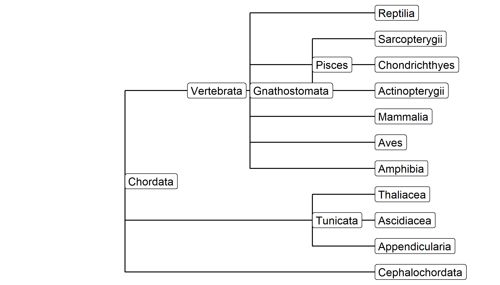
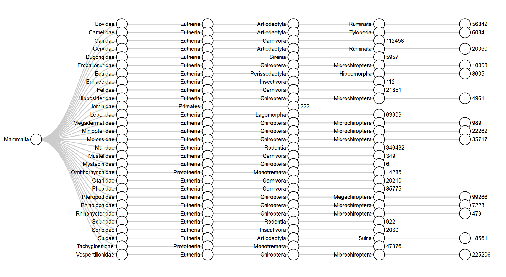

vignettes/taxonomic_information.Rmd
taxonomic_information.Rmdgalah provides multiple ways of retrieving taxonomic information, and the best method depends of the type of information required. Below, some use cases are outlined.
The simplest way to get taxonomic information is to use select_taxa. This function takes one or more scientific names and checks them against the ALA’s taxonomy service.
library(galah)
select_taxa("Chordata")## search_term scientific_name taxon_concept_id rank match_type kingdom phylum vernacular_name issues
## 1 Chordata CHORDATA urn:lsid:biodiversity.org.au:afd.taxon:065f1da4-53cd-40b8-a396-80fa5c74dedd phylum exactMatch Animalia Chordata vertebrates noIssueBy default, this function shows the search term, the match (if any) within the ALA, and some information on higher taxonomy of that clade. Critically, it also returns a unique identifier for that clade, stored in the column taxon_concept_id. This identifer is the information that the ALA needs to return data that is specific to the taxon in question, i.e.:
ala_counts(taxa = select_taxa("Chordata"))## [1] 68909129select_taxa can accept a vector or a data.frame of taxonomic names, and always returns a data.frame with the same number of rows as there are names to query.
One final, useful feature of select_taxa is that it works in reverse. That is, if you have a unique identifier and would like to know which taxon it refers to, you can find that out by setting is_id to TRUE:
select_taxa("urn:lsid:biodiversity.org.au:afd.taxon:97764bed-9492-4066-a45f-e5b0c6c4280d", is_id = TRUE)A common use case for atlas data is to identify the list of species that occur within a clade, in a particular location, or according to some other criterion. This is provided by the ala_species function.
burrowing_frogs <- ala_species(
taxa = select_taxa("Heleioporus"))
str(burrowing_frogs, give.attr = FALSE)## 'data.frame': 6 obs. of 10 variables:
## $ kingdom : chr "Animalia" "Animalia" "Animalia" "Animalia" ...
## $ phylum : chr "Chordata" "Chordata" "Chordata" "Chordata" ...
## $ class : chr "Amphibia" "Amphibia" "Amphibia" "Amphibia" ...
## $ order : chr "Anura" "Anura" "Anura" "Anura" ...
## $ family : chr "Limnodynastidae" "Limnodynastidae" "Limnodynastidae" "Limnodynastidae" ...
## $ genus : chr "Heleioporus" "Heleioporus" "Heleioporus" "Heleioporus" ...
## $ species : chr "Heleioporus eyrei" "Heleioporus australiacus" "Heleioporus albopunctatus" "Heleioporus psammophilus" ...
## $ author : chr "(Gray, 1845)" "(Shaw & Nodder, 1795)" "Gray, 1841" "(Lee & Main, 1954)" ...
## $ species_guid : chr "urn:lsid:biodiversity.org.au:afd.taxon:cf991494-ccee-433d-b049-f2a0996a0a3b" "urn:lsid:biodiversity.org.au:afd.taxon:20119b25-a27c-4174-b3e0-8639e8a21131" "urn:lsid:biodiversity.org.au:afd.taxon:c1d18a1e-5aec-4441-aa3c-e0ac799f51e8" "urn:lsid:biodiversity.org.au:afd.taxon:0efbf288-1526-4551-af83-52e4fb9dae59" ...
## $ vernacular_name: chr "Moaning Frog" "Giant Burrowing Frog" "Western Spotted Frog" "Sand Frog" ...ala_species is similar to select_taxa, in that it returns taxonomic information and unique identifiers in a data.frame. It differs in not being able to return information on taxonomic levels other than the species; but also in being more flexible by supporting filtering e.g.:
burrowing_frogs <- ala_species(
taxa = select_taxa("Heleioporus"),
filters = select_filters(
stateProvince = "New South Wales",
year > 2010))
str(burrowing_frogs, give.attr = FALSE)## 'data.frame': 4 obs. of 10 variables:
## $ kingdom : chr "Animalia" "Animalia" "Animalia" "Animalia"
## $ phylum : chr "Chordata" "Chordata" "Chordata" "Chordata"
## $ class : chr "Amphibia" "Amphibia" "Amphibia" "Amphibia"
## $ order : chr "Anura" "Anura" "Anura" "Anura"
## $ family : chr "Limnodynastidae" "Limnodynastidae" "Limnodynastidae" "Limnodynastidae"
## $ genus : chr "Heleioporus" "Heleioporus" "Heleioporus" "Heleioporus"
## $ species : chr "Heleioporus australiacus" "Heleioporus inornatus" "Heleioporus eyrei" "Heleioporus barycragus"
## $ author : chr "(Shaw & Nodder, 1795)" "(Lee & Main, 1954)" "(Gray, 1845)" "Lee, 1967"
## $ species_guid : chr "urn:lsid:biodiversity.org.au:afd.taxon:20119b25-a27c-4174-b3e0-8639e8a21131" "urn:lsid:biodiversity.org.au:afd.taxon:16fcc761-685a-4527-b5e4-e6c7042ae2c6" "urn:lsid:biodiversity.org.au:afd.taxon:cf991494-ccee-433d-b049-f2a0996a0a3b" "urn:lsid:biodiversity.org.au:afd.taxon:c527388c-1cc7-4a10-800a-243b5a2dcd3c"
## $ vernacular_name: chr "Giant Burrowing Frog" "Plains Frog" "Moaning Frog" "Western Marsh Frog"Although we have focussed above on functions that are built to integrate taxonomic concepts, the more general select_filters can be used to build more flexible queries using the taxonConceptID field. This can be useful for paraphyletic concepts such as invertebrates:
invertebrate_filter <- select_filters(
taxonConceptID = select_taxa("Animalia")$taxon_concept_id,
taxonConceptID != select_taxa("Chordata")$taxon_concept_id)
head(ala_counts(filters = invertebrate_filter, group_by = "class"))## class count
## 1 Insecta 3120780
## 2 Gastropoda 824225
## 3 Malacostraca 508120
## 4 Arachnida 494441
## 5 Maxillopoda 462423
## 6 Polychaeta 256523While many users want to restrict searches to particular taxa using select_taxa(), there are many cases where the taxonoimc hierarchy is itself the parameter of investigation. In that case you can return taxonomic information as a tree (from package data.tree) using ala_taxonomy(). This function requires two arguments:
taxa supplies the higher taxonomic group for which data is requireddown_to is the lowest rank of the taxonomic hierarchy that the user requires (see find_ranks() for valid options)The function then searches ‘downwards’ from taxa to build the tree.
library(data.tree)
classes <- ala_taxonomy(taxa = select_taxa("Chordata"), down_to = "class")
print(classes, "rank")## levelName rank
## 1 Chordata phylum
## 2 ¦--Cephalochordata subphylum
## 3 ¦ °--Amphioxi class
## 4 ¦--Craniata subphylum
## 5 ¦ °--Agnatha superclass
## 6 ¦ ¦--Cephalasipidomorphi class
## 7 ¦ °--Myxini class
## 8 ¦--Tunicata subphylum
## 9 ¦ ¦--Appendicularia class
## 10 ¦ ¦--Ascidiacea class
## 11 ¦ °--Thaliacea class
## 12 °--Vertebrata subphylum
## 13 °--Gnathostomata informal
## 14 ¦--Amphibia class
## 15 ¦--Aves class
## 16 ¦--Mammalia class
## 17 ¦--Pisces informal
## 18 ¦ ¦--Actinopterygii class
## 19 ¦ ¦--Chondrichthyes class
## 20 ¦ ¦--Cephalaspidomorphi class
## 21 ¦ °--Sarcopterygii class
## 22 °--Reptilia classNote that if you are traversing more than 3 ranks, it might be more efficient to use ala_species, as search_taxonomy is inefficient when the search tree is large.
The data.tree package is quite rich and contains many useful functions, so we won’t attempt to give a complete overview here. Nonetheless, there are some useful functions that might be of particular interest. A clear example is ‘pruning’ the tree, for example by only retaining nodes that are from the same source (or ‘authority’).
unique(classes$Get("authority")) # levels available in the dataset## [1] "AFD" "NZOR" "CAAB"
# subset to only those nodes supplied by the Australian Faunal Directory
Prune(classes, pruneFun = function(a){a$authority == "AFD"})## [1] 6
print(classes, "authority")## levelName authority
## 1 Chordata AFD
## 2 ¦--Cephalochordata AFD
## 3 ¦--Tunicata AFD
## 4 ¦ ¦--Appendicularia AFD
## 5 ¦ ¦--Ascidiacea AFD
## 6 ¦ °--Thaliacea AFD
## 7 °--Vertebrata AFD
## 8 °--Gnathostomata AFD
## 9 ¦--Amphibia AFD
## 10 ¦--Aves AFD
## 11 ¦--Mammalia AFD
## 12 ¦--Pisces AFD
## 13 ¦ ¦--Actinopterygii AFD
## 14 ¦ ¦--Chondrichthyes AFD
## 15 ¦ °--Sarcopterygii AFD
## 16 °--Reptilia AFDNote that the above syntax is slightly unusual, in that the tree (classes) is updated even though we don’t assign the result to an obect. This is because classes is an S6 object. In fact, trees created from data.tree Nodes have a few unusual properties that we can exploit to do interesting things. A common task, for example, is to calculate the number of records present for each node in the tree. A quick way to do this would be to extract all the guid values and query them using ala_counts().
counts <- lapply(classes$Get("guid"), ala_counts)While this approach works, it is inefficient, because each node has to be searched separately. A more efficient solution is to recognise that counts for higher taxonomic groups/nodes should be the sum of their child nodes. We can use this logic to run fewer queries via the ALA, and thereby get a neater result in less time.
# select only the 'leaves' (terminal nodes) of the tree
leaves <- Traverse(classes, filterFun = isLeaf)
# get data on record counts
leaf_counts <- lapply(Get(leaves, "guid"), ala_counts)
# add back on to the tree
classes$Set(n_records = 0)
Set(leaves, n_records = unlist(leaf_counts))
print(classes, "n_records")## levelName n_records
## 1 Chordata 0
## 2 ¦--Cephalochordata 564
## 3 ¦--Tunicata 0
## 4 ¦ ¦--Appendicularia 74591
## 5 ¦ ¦--Ascidiacea 24267
## 6 ¦ °--Thaliacea 9458
## 7 °--Vertebrata 0
## 8 °--Gnathostomata 0
## 9 ¦--Amphibia 814058
## 10 ¦--Aves 59712719
## 11 ¦--Mammalia 3195438
## 12 ¦--Pisces 0
## 13 ¦ ¦--Actinopterygii 2915369
## 14 ¦ ¦--Chondrichthyes 841450
## 15 ¦ °--Sarcopterygii 4353
## 16 °--Reptilia 1296302
# sum upwards
classes$Do(
function(a){
a$n_records <- Aggregate(node = a, attribute = "n_records", aggFun = sum)},
traversal = "post-order")
print(classes, "n_records")## levelName n_records
## 1 Chordata 68888569
## 2 ¦--Cephalochordata 564
## 3 ¦--Tunicata 108316
## 4 ¦ ¦--Appendicularia 74591
## 5 ¦ ¦--Ascidiacea 24267
## 6 ¦ °--Thaliacea 9458
## 7 °--Vertebrata 68779689
## 8 °--Gnathostomata 68779689
## 9 ¦--Amphibia 814058
## 10 ¦--Aves 59712719
## 11 ¦--Mammalia 3195438
## 12 ¦--Pisces 3761172
## 13 ¦ ¦--Actinopterygii 2915369
## 14 ¦ ¦--Chondrichthyes 841450
## 15 ¦ °--Sarcopterygii 4353
## 16 °--Reptilia 1296302The same approach can be used to find the number of species within a clade
# get species counts
leaf_spp_counts <- lapply(
Get(leaves, "guid"),
function(x){ala_counts(x, type = "species")})
# add back to the tree, then sum
classes$Set(n_species = 0)
Set(leaves, n_species = unlist(leaf_spp_counts))
classes$Do(
function(a){
a$n_species <- Aggregate(node = a, attribute = "n_species", aggFun = sum)},
traversal = "post-order")
# check results
print(classes, "n_species")## levelName n_species
## 1 Chordata 9174
## 2 ¦--Cephalochordata 7
## 3 ¦--Tunicata 809
## 4 ¦ ¦--Appendicularia 10
## 5 ¦ ¦--Ascidiacea 784
## 6 ¦ °--Thaliacea 15
## 7 °--Vertebrata 8358
## 8 °--Gnathostomata 8358
## 9 ¦--Amphibia 245
## 10 ¦--Aves 952
## 11 ¦--Mammalia 421
## 12 ¦--Pisces 5649
## 13 ¦ ¦--Actinopterygii 5292
## 14 ¦ ¦--Chondrichthyes 356
## 15 ¦ °--Sarcopterygii 1
## 16 °--Reptilia 1091Although the tree format is useful, converting to a data.frame is straightforward.
# arrange columns by 'level'
ToDataFrameTypeCol(classes) ## level_1 level_2 level_3 level_4 level_5
## 1 Chordata Cephalochordata <NA> <NA> <NA>
## 2 Chordata Tunicata Appendicularia <NA> <NA>
## 3 Chordata Tunicata Ascidiacea <NA> <NA>
## 4 Chordata Tunicata Thaliacea <NA> <NA>
## 5 Chordata Vertebrata Gnathostomata Amphibia <NA>
## 6 Chordata Vertebrata Gnathostomata Aves <NA>
## 7 Chordata Vertebrata Gnathostomata Mammalia <NA>
## 8 Chordata Vertebrata Gnathostomata Pisces Actinopterygii
## 9 Chordata Vertebrata Gnathostomata Pisces Chondrichthyes
## 10 Chordata Vertebrata Gnathostomata Pisces Sarcopterygii
## 11 Chordata Vertebrata Gnathostomata Reptilia <NA>
# arrange columns by 'rank'
ToDataFrameTypeCol(classes, type = "rank") # works, but merges informal ranks## rank_phylum rank_subphylum rank_informal rank_class
## 1 Chordata Cephalochordata <NA> <NA>
## 2 Chordata Tunicata <NA> Appendicularia
## 3 Chordata Tunicata <NA> Ascidiacea
## 4 Chordata Tunicata <NA> Thaliacea
## 5 Chordata Vertebrata Gnathostomata Amphibia
## 6 Chordata Vertebrata Gnathostomata Aves
## 7 Chordata Vertebrata Gnathostomata Mammalia
## 8 Chordata Vertebrata Pisces, Gnathostomata Actinopterygii
## 9 Chordata Vertebrata Pisces, Gnathostomata Chondrichthyes
## 10 Chordata Vertebrata Pisces, Gnathostomata Sarcopterygii
## 11 Chordata Vertebrata Gnathostomata ReptiliaWhile useful, neither of the above approaches preserve the rank of each node if there are multiple nodes in the data.tree returned with rank informal or unranked. Therefore, a more useful approach is to take more care in linking levels and ranks, then converting to a data.frame
# create a label that uniquely identifies unranked nodes
classes$Do(
function(a){
if(a$rank %in% find_ranks()$name){
a$rank_level <- a$rank
}else{
a$rank_level <- paste0(a$rank, "-level-", a$level)
}
})
# use rank_level as an index to create a data.frame
df <- ToDataFrameTypeCol(classes, type = "rank_level", prefix = NULL)
df## phylum subphylum informal-level-3 informal-level-4 class
## 1 Chordata Cephalochordata <NA> <NA> <NA>
## 2 Chordata Tunicata <NA> <NA> Appendicularia
## 3 Chordata Tunicata <NA> <NA> Ascidiacea
## 4 Chordata Tunicata <NA> <NA> Thaliacea
## 5 Chordata Vertebrata Gnathostomata <NA> Amphibia
## 6 Chordata Vertebrata Gnathostomata <NA> Aves
## 7 Chordata Vertebrata Gnathostomata <NA> Mammalia
## 8 Chordata Vertebrata Gnathostomata Pisces Actinopterygii
## 9 Chordata Vertebrata Gnathostomata Pisces Chondrichthyes
## 10 Chordata Vertebrata Gnathostomata Pisces Sarcopterygii
## 11 Chordata Vertebrata Gnathostomata <NA> ReptiliaIf we want to take more information out of the tree, we can extract it and append to our new data.frame.
cbind(
df[, c("phylum", "subphylum", "class")],
data.frame(
auth = ToDataFrameTypeCol(classes, "authority")$authority))## phylum subphylum class auth
## 1 Chordata Cephalochordata <NA> AFD
## 2 Chordata Tunicata Appendicularia AFD
## 3 Chordata Tunicata Ascidiacea AFD
## 4 Chordata Tunicata Thaliacea AFD
## 5 Chordata Vertebrata Amphibia AFD
## 6 Chordata Vertebrata Aves AFD
## 7 Chordata Vertebrata Mammalia AFD
## 8 Chordata Vertebrata Actinopterygii AFD
## 9 Chordata Vertebrata Chondrichthyes AFD
## 10 Chordata Vertebrata Sarcopterygii AFD
## 11 Chordata Vertebrata Reptilia AFDThere are a range of methods for visualising objects returned by data.tree. The tidygraph package can be used to convert a tree into a format suitable for plotting with ggraph.
library(ggplot2)
library(tidygraph)
library(ggraph)
ggraph(as_tbl_graph(classes), layout = 'dendrogram') +
geom_edge_elbow() +
geom_node_label(aes(label = name), hjust = 0) +
coord_flip() +
scale_y_reverse(expand = expansion(add = 2)) +
theme_void() 
Alternatively, the collapsibleTree package works on a data.frame.
library(collapsibleTree)
collapsibleTree(
df,
hierarchy = colnames(df),
root = "Chordata",
collapsed = FALSE,
width = 700,
height = 400)